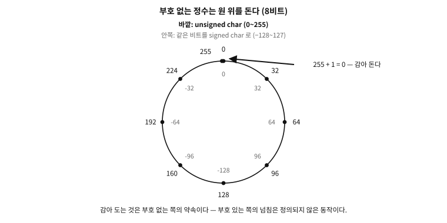
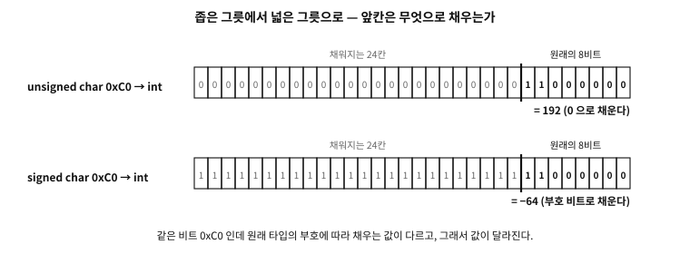

6 정수의 표현 — 부호, 오버플로, 시프트
먼저 알아야 할 것
돌아보기
3장에서 여러 바이트를 이어 붙여 큰 수를 담는다 했고, 엔디안(넣는 순서)까지 보았다. 그런데 지금까지의 수는 전부 0 이상이었다. 음수는 — 비트 어디에 마이너스 기호를 담는가?
답. 담을 곳이 없다 — 비트에는 0과 1뿐, 마이너스 기호가 없다(2장). 그래서 음수 역시 약속으로 만든다. 어떤 비트 패턴을 음수로 “읽기로” 정하는 것이다. 그 약속을 정하는 방법이 하나가 아니었다는 것, 그리고 그 경쟁의 결말이 이 장의 한복판이다.
이 장의 필요성과 맥락
이 장이 끝나면
이 장에서 답할 질문
- 그런데 왜 이름이 “보수”인가? 그리고 1의 보수, 2의 보수라는 이름에서 1과 2는 무엇을 가리키는가?
- 표현이 2의 보수로 못박혔으니, 이제 부호 있는 오버플로도 “감아 돌기”로 정의된 것인가?
- 비트를 밀고 채우는 규칙까지 알아야 할 만큼, 시프트가 중요한 연산인가?
- 8비트짜리 수를 여덟 칸, 혹은 그 이상 밀면 어떻게 되는가? 상식적으로는 전부 밀려나 0이 될 것 같은데.
- 1을 잔뜩 채웠는데 왜 값이 그대로인가? 우연인가?
6.1 부호 없는 정수 — 시계처럼 도는 수
먼저 마이너스 걱정이 없는 세계부터 정리한다. 비트를 그냥 2진수로 읽으면 부터 까지, 개의 수가 담긴다(2장). 이것이 부호 없는(unsigned) 정수다. 8비트면 0–255다.
이 수의 세계에서 꼭 챙길 성질이 하나 있다. 끝이 처음과 이어져 있다는 것이다. 255에서 1을 더하면 256이 아니라 — 256을 담을 아홉 번째 비트가 없으므로 — 0이 된다. 12시에서 한 시간이 지나면 1시가 되는 시계와 같은 구조다. 수학에서는 이런 셈을 모듈러 산술이라 부른다.

그림 6.1 — 바깥은 unsigned char로 읽은 값, 안쪽은 같은 비트를 signed char로 읽은 값이다.
그림의 안쪽 눈금이 미리 답해 주는 것이 하나 있다 — 같은 비트를 부호 있는 타입으로 읽으면 원의 반대쪽이 음수가 된다. 다음 절이 그 이야기다.
수학. 모듈러 산술 — 유한한 수의 정확한 수학
비트 부호 없는 정수의 덧셈·뺄셈·곱셈은 결과를 으로 나눈 나머지를 취하는 연산과 정확히 같다:
8비트에서 다. 중요한 것은 이것이 “틀린 덧셈”이 아니라 다른 덧셈 — 완전히 정의된, 예측 가능한 수학 — 이라는 점이다. C 표준도 부호 없는 정수의 넘침을 오류가 아니라 이 수학으로 정의한다.
이 순환에는 이름이 있다 — 오버플로(overflow), 정확히는 “감아 돌기”(wrap-around)다. 정의된 동작이라 해도, 예상하지 못한 자리에서 일어나면 사고가 된다.
실제 사례. 256판의 벽 — 팩맨 킬 스크린
6.2 음수를 담는 세 가지 약속
이제 음수다. 관건은 비트 패턴의 절반쯤을 음수로 “읽기로” 약속하는 방식인데, 역사상 세 가지 약속이 실제로 쓰였다. 8비트로 를 담는 경우로 비교한다.
첫째, 부호-크기(sign-magnitude). 사람의 표기를 그대로 흉내 낸다 — 맨 앞 비트를 마이너스 기호로 쓰고(1이면 음수), 나머지에 크기를 담는다. 는 1_0000101. 직관적이지만 두 가지 대가가 있다. 00000000(+0)과 10000000(−0), 0이 두 개 생긴다. 그리고 덧셈 회로가 골치다 — 부호가 다른 두 수를 더하려면 “크기를 비교해서 큰 쪽에서 작은 쪽을 빼고 부호를 정하는” 별도 절차가 필요하다.
둘째, 1의 보수(ones’ complement). 음수를 만들 때 모든 비트를 뒤집는다. 가 00000101이니 는 11111010. 덧셈 회로가 한결 단순해지지만, 여전히 0이 두 개다(00000000과 11111111) — 비교할 때마다 “두 0은 같은 것으로 친다”는 예외를 끌고 다녀야 한다.
셋째, 2의 보수(two’s complement). 비트를 뒤집고 1을 더한다. 는 11111010 + 1 = 11111011. 언뜻 임의로 보이는 이 규칙이 사실은 가장 우아하다 — 0이 하나뿐이고, 무엇보다 부호 없는 덧셈 회로를 그대로 쓰면 부호 있는 덧셈이 저절로 맞는다. 별도 절차도 예외도 없다.
문. 그런데 왜 이름이 “보수”인가? 그리고 1의 보수, 2의 보수라는 이름에서 1과 2는 무엇을 가리키는가?
답. 보수(補數, complement)는 “채워서 어떤 기준을 완성해 주는 수”다. 십진법으로 먼저 감을 잡으면 쉽다 — 세 자리 수 304에 대해, 각 자리를 9까지 채워 주는 695를 9의 보수라 하고(모든 자리에서 ), 1000까지 채워 주는 696을 10의 보수라 한다(). 둘의 관계는 “9의 보수 + 1 = 10의 보수”다.
2진법에서 똑같은 일을 하면 이름의 뜻이 풀린다. 각 자리를 1까지 채워 주는 수 — 즉 11111111에서 빼는 것 — 가 1의 보수인데, 2진법 에서 는 곧 비트 뒤집기라서 “뒤집는다”는 규칙이 나온 것이다. 그리고 — 이진법의 “”, 즉 2의 거듭제곱 — 에서 빼는 것이 2의 보수다. “뒤집고 1을 더한다”는 요령은 십진법의 “9의 보수 + 1 = 10의 보수”와 똑같은 관계다.
영어 표기도 여기서 정리해 둔다. 통용 표기는 one’s complement와 two’s complement다(“1s’”나 “2s’” 같은 표기는 없다). 다만 전산학자 커누스(Knuth)는 재치 있는 구별을 주장했다 — 1의 보수는 “모든 자리의 1들에 대한 보수”이므로 복수 소유격 ones’ complement가 옳고, 2의 보수는 “이라는 하나의 수에 대한 보수”이므로 단수 소유격 two’s complement가 옳다는 것이다. 문법 트집 같지만 두 보수의 수학적 정의 차이(자리별 기준 vs 전체 기준)를 정확히 담은 구별이고 — 실제로 C 표준 문서 자신이 이 구별을 채택했다. 표준의 표현 조항은 세 방식을 “sign and magnitude”, “two’s complement”, “ones’ complement”라고 적는다. 커누스의 트집이 법전에 이긴 셈이다. 교과서 용어로는 2의 보수를 기수 보수(radix complement), 1의 보수를 감소 기수 보수(diminished radix complement)라고도 부른다.
수학. 2의 보수가 우아한 이유 — 모듈러 산술의 재활용
11111011이다. 그러면 는 회로 입장에서 — 답이 저절로 맞는다. 음수란 “모듈러 시계에서 반대 방향으로 세는 것”일 뿐이라서, 회로는 부호를 아예 몰라도 된다. 유일한 비대칭은 범위다 — 8비트에서 부터 까지로, 음수가 하나 더 많다(의 짝 이 없다).6.3 세 약속의 경쟁, 그리고 C23의 결단
세 방식 모두 실제 기계에 쓰였다 — 부호-크기와 1의 보수는 초기 대형기들(UNIVAC, CDC 계열 등)에 실존했다. C가 표준화되던 1989년에도 그런 기계들이 현역이었기 때문에, C 표준은 어느 편도 들지 않았다. 세 가지 표현을 모두 허용한 것이다. 이 중립은 공짜가 아니었다 — 표현이 다르면 같은 연산의 결과 비트가 달라지므로, 표준은 부호 있는 정수의 많은 동작을 “기계마다 다르다”로 남겨 둘 수밖에 없었다. 부호 있는 오버플로가 정의되지 않은 동작(54장)이 된 사연의 절반이 여기에 있다.
그사이 현실은 한쪽으로 수렴했다. 2의 보수의 회로 단순성이 압도적이라 수십 년간 새로 만들어진 CPU는 사실상 전부 2의 보수였고, 나머지 두 방식은 박물관으로 갔다. 그리고 C23이 마침내 결단했다 — 부호 있는 정수의 표현은 2의 보수다. 반세기의 관행이 표준의 약속으로 승격된 것이다(2장의 “바이트=8비트” 논의와 똑같은 꼴이다).
문. 표현이 2의 보수로 못박혔으니, 이제 부호 있는 오버플로도 “감아 돌기”로 정의된 것인가?
답. 아니다 — 여기가 미묘하고 중요한 지점이다. C23이 못박은 것은 표현 (음수가 어떤 비트 패턴인가)이지, 오버플로의 의미가 아니다. 부호 있는 정수의 오버플로는 C23에서도 여전히 정의되지 않은 동작으로 남았다. 이유는 표현이 아니라 최적화다 — “부호 있는 수는 넘치지 않는다”는 전제가 컴파일러(14장)의 루프 분석과 재배열에 요긴해서, 표준은 그 전제를 유지하는 쪽을 택했다. 요약하면: 부호 없는 넘침 = 정의된 감아 돌기, 부호 있는 넘침 = 여전히 계약 밖. 실무 규칙은 28장에서 다룬다.
흔한 오해. “오버플로가 나면 컴퓨터가 오류를 알려 준다”
6.4 시프트 — 비트를 통째로 밀기
정수의 비트를 다루는 기본 연산이 하나 더 있다 — 시프트(shift), 비트 열을 통째로 왼쪽이나 오른쪽으로 미는 것이다. 밀고 나면 두 가지 질문이 남는다. 밀려난 비트는 어디로 가고, 빈자리는 무엇으로 채우는가.
왼쪽 시프트는 답이 하나다. 위로 밀려난 비트는 버려지고, 아래 빈자리는 0으로 채운다. 00010110을 왼쪽으로 한 칸 밀면 00101100 — 십진법에서 끝에 0을 붙이면 10배가 되듯, 2진법의 왼쪽 한 칸은 2배다.
오른쪽 시프트는 답이 둘이다. 빈자리(맨 위)를 무엇으로 채우는가에 따라 갈린다.
- 논리 시프트(logical): 0으로 채운다. 부호 없는 수에 맞는 방식이고, 오른쪽 한 칸은 2로 나눈 몫이 된다.
- 산술 시프트(arithmetic): 부호 비트를 복사해 채운다. 2의 보수 음수는 맨 위 비트들이 1로 차 있으므로(위의 =
11111011), 1을 채워야 “2로 나누기”라는 뜻이 유지된다. 0을 채워 버리면 음수가 갑자기 거대한 양수처럼 읽힌다.
그래서 CPU들은 오른쪽 시프트 명령을 두 벌(논리/산술) 갖고 있고, C에서는 부호 없는 수의 오른쪽 시프트는 논리로, 부호 있는 음수의 오른쪽 시프트는 — 오랫동안 “기계마다 다르다”였다가 사실상 모든 구현이 산술을 쓰는 관행으로 수렴했다. 2의 보수 확정과 나란히, 관행을 약속으로 승격하는 방향의 정리다.
문. 비트를 밀고 채우는 규칙까지 알아야 할 만큼, 시프트가 중요한 연산인가?
답. 중요하다 — 두 가지 이유에서다.
첫째, 가장 싼 연산이기 때문이다. 시프트는 회로 입장에서 배선을 옆으로 옮기는 수준의 일이라, 거의 모든 CPU에서 한 박자짜리 최속 연산에 속한다. 방금 본 대로 왼쪽 칸은 배, 오른쪽 칸은 으로 나눈 몫이므로 — 2의 거듭제곱 곱셈·나눗셈을 시프트로 바꾸는 것은 고전적인 속도 요령이었다. 다만 오늘의 C에서는 그 요령을 사람이 부릴 필요가 없다. 소스에는 뜻 그대로 x * 2, x / 8이라 쓰면 되고, 컴파일러(14장의 편집자)가 알아서 시프트로 바꿔 준다. 가독성을 내주고 얻을 것이 없는 자리다.
둘째, 비트의 세계를 다루는 기본 동작이기 때문이다. 여러 값을 한 정수의 비트 자리들에 나눠 담고 꺼내는 일 — 8장에서 볼 UTF-8 바이트 조립, 4장의 태그 포인터, 색상값(RGB)의 분해, 하드웨어 레지스터의 플래그 읽기 — 이 전부가 “원하는 자리로 밀고, 필요한 비트만 남기는” 시프트+마스크의 조합이다. 수의 곱셈으로서의 시프트는 컴파일러에게 넘어갔지만, 자리 배치 도구로서의 시프트는 시스템 프로그래머의 일상 언어로 남아 있다. C 문법에서의 실제 사용은 29장에서 다룬다.
문. 8비트짜리 수를 여덟 칸, 혹은 그 이상 밀면 어떻게 되는가? 상식적으로는 전부 밀려나 0이 될 것 같은데.
답. 바로 그 “상식”이 기계마다 달랐다는 것이 함정이다. 시프트 칸수는 CPU 안에서 몇 비트짜리 회로가 처리하는데, 폭 이상의 칸수가 들어왔을 때의 대응이 갈렸다 — 어떤 CPU 계열(인텔 x86)은 칸수의 아래 몇 비트만 보고 나머지를 무시해서 32비트 수를 32칸 밀면 그대로이고, 다른 계열(옛 ARM 등)은 정말로 다 밀어서 0이 된다. 같은 코드가 기계마다 다른 답을 내는 것이다. C 표준의 대응은 이제 익숙한 패턴이다 — 어느 편도 들 수 없으니, 폭 이상의 시프트는 정의되지 않은 동작으로 계약 밖에 두었다. “기계들이 서로 다르게 대응하는 곳은 표준이 약속을 포기한다” — 이 패턴은 54장에서 정식으로 다시 만난다.
6.5 부호 확장(sign extension) — 좁은 그릇에서 넓은 그릇으로
시프트의 “무엇으로 채우는가”라는 질문은 한 군데서 더 나타난다. 8비트 그릇에 든 수를 16비트 그릇으로 옮겨 담을 때다. 늘어난 위쪽 여덟 칸을 무엇으로 채울 것인가.
부호 없는 수는 답이 자명하다 — 0으로 채운다(zero extension). 8비트의 11111011(=251)은 16비트의 00000000 11111011(=251)이 된다. 값이 그대로다.

그림 6.2 — 같은 여덟 비트라도 원래 타입의 부호에 따라 앞칸을 채우는 값이 다르다.
부호 있는 수에서는 같은 방법이 사고를 낸다. 8비트의 11111011은 2의 보수로 인데, 위를 0으로 채우면 16비트의 00000000 11111011 — 맨 앞 비트가 0이니 양수 251로 읽힌다. 가 그릇을 옮기다가 251이 된 것이다. 올바른 답은 산술 시프트와 같은 요령이다 — 부호 비트를 복사해 채운다. 11111111 11111011, 여전히 다. 이것이 부호 확장(sign extension)이다.
문. 1을 잔뜩 채웠는데 왜 값이 그대로인가? 우연인가?
답. 우연이 아니라 모듈러 수학의 필연이다. 2의 보수에서 8비트의 는 이라는 패턴이었고, 16비트의 는 이라는 패턴이다. 그런데 — 이진법으로 적으면 정확히 “원래 패턴 위에 1을 여덟 개 얹은 것”이다. 부호 비트 복사란 “에 대한 보수를 에 대한 보수로 갈아 끼우는” 산술을 비트 복사 한 번으로 해치우는 요령이다. 2의 보수의 우아함이 여기서도 일한다 — 부호-크기나 1의 보수였다면 이런 공짜 확장은 없다.
거꾸로 넓은 그릇에서 좁은 그릇으로 줄여 담으면 위쪽 비트들이 그냥 잘려 나간다 — 값이 그릇에 안 들어가면 소리 없이 망가진다는 점에서 오버플로의 사촌이다. C는 계산 전에 작은 정수를 자동으로 넓히는 규칙 (정수 승격)이 있고, 넓히기·줄이기가 언제 일어나며 무엇이 위험한지 는 C의 정수 타입과 함께 28·29장에서 정식으로 다룬다 — 이 장의 그림 (0 채움 / 부호 복사 / 잘림)이 그때의 밑천이다.
6.6 눈으로 확인하기
지금까지 그림으로 말한 것을 실제로 찍어 본다. 이 장의 첫 시연이자, 이 책에서 처음으로 기계가 직접 대답하는 자리다.
examples/ch06/repr.c
/* 수가 비트로 어떻게 담기는가 --- 눈으로 본다.
2의 보수, 시계처럼 감아 도는 부호 없는 수, 그리고 부호 확장. */
#include <stdio.h>
#include <stdint.h>
#include <inttypes.h>
/* 값의 비트를 높은 자리부터 찍는다 --- 여덟 자리마다 한 칸 띄운다 */
static void bits(const char *label, uint32_t v, int width)
{
printf("%-24s ", label);
for (int i = width - 1; i >= 0; i--) {
putchar((v >> i & 1) ? '1' : '0');
if (i % 8 == 0 && i != 0) putchar(' ');
}
putchar('\n');
}
int main(void)
{
puts("== two's complement: negative is not a sign bit glued on ==");
int8_t a = 5, b = -5;
bits("(int8_t) 5", (uint8_t)a, 8);
bits("(int8_t) -5", (uint8_t)b, 8);
bits("flip the bits of 5", (uint8_t)~(uint8_t)a, 8);
bits("... and add one", (uint8_t)(~(uint8_t)a + 1u), 8);
printf("so -5 is stored as %u when read as unsigned\n\n", (unsigned)(uint8_t)b);
puts("== unsigned arithmetic goes round like a clock ==");
uint8_t clock = 250;
printf("250 + 10 in a uint8_t = %u (not 260: it wrapped at 256)\n", (uint8_t)(clock + 10u));
printf("0 - 1 in a uint8_t = %u (the clock ran backwards)\n\n", (uint8_t)(0u - 1u));
puts("== the same bits mean different numbers ==");
uint8_t raw = 0xF6;
printf("bits 11110110 as unsigned = %u\n", (unsigned)raw);
printf("bits 11110110 as signed = %d\n\n", (int)(int8_t)raw);
puts("== sign extension: widening keeps the value, not the bits ==");
int8_t small = -10;
int32_t wide = small;
bits("(int8_t) -10", (uint8_t)small, 8);
bits("widened to int32_t", (uint32_t)wide, 32);
printf("value stayed %d --- the machine copied the top bit to fill\n", wide);
return 0;
}
실행 결과
== two's complement: negative is not a sign bit glued on ==
(int8_t) 5 00000101
(int8_t) -5 11111011
flip the bits of 5 11111010
... and add one 11111011
so -5 is stored as 251 when read as unsigned
== unsigned arithmetic goes round like a clock ==
250 + 10 in a uint8_t = 4 (not 260: it wrapped at 256)
0 - 1 in a uint8_t = 255 (the clock ran backwards)
== the same bits mean different numbers ==
bits 11110110 as unsigned = 246
bits 11110110 as signed = -10
== sign extension: widening keeps the value, not the bits ==
(int8_t) -10 11110110
widened to int32_t 11111111 11111111 11111111 11110110
value stayed -10 --- the machine copied the top bit to fill
가장 먼저 눈에 들어오는 것은 -5 의 비트다. 5 를 뒤집고 1을 더한 줄과 글자 하나 다르지 않다. 음수에는 「부호 비트를 붙인」 흔적이 없다 — 2의 보수는 규칙이 아니라 같은 덧셈 회로로 뺄셈까지 하려는 설계의 결과이기 때문이다.
그 설계가 부호 없는 수에서는 시계로 나타난다. 250 에 10 을 더하면 4 가 되고 0 에서 1 을 빼면 255 가 되는데, 오류가 아니라 약속된 결과다.
그러니 비트만 보아서는 무슨 수인지 알 수 없다. 11110110 은 부호 없이 읽으면 246 이고 부호 있게 읽으면 −10 이다. 비트에는 부호가 없고, 어떤 타입으로 읽느냐가 뜻을 정한다.
마지막 줄이 그 사실의 뒷면이다. 8비트 −10 을 32비트로 넓히면 위쪽이 1로 채워진다 — 0으로 채우면 값이 246 으로 바뀌어 버리므로, 기계는 비트가 아니라 값을 지킨다.
정수의 배경지식이 완성됐다. 부호 없는 수는 시계처럼 도는 모듈러의 세계이고, 음수는 세 가지 약속의 경쟁 끝에 2의 보수로 정리되어 C23이 못박았으며, 넘침은 조용하고, 시프트와 그릇 옮기기(확장)는 채움의 방식 까지 알아야 뜻이 선다. C의 정수 타입들과 실무 규칙은 28·29장에서 이 배경 위에 세운다.
다음 장은 사다리의 다음 단이다 — 정수 너머, 소수점 있는 수를 담는 두 가지 방법과 IEEE 754라는 계약을 만난다.